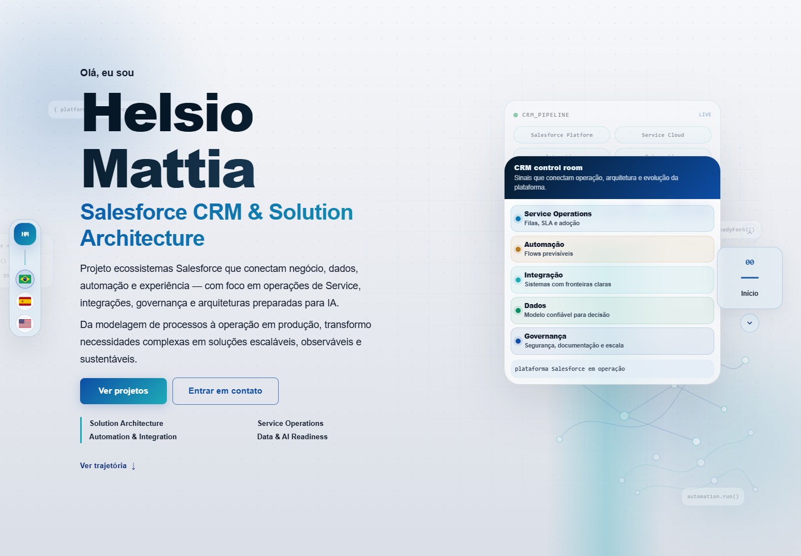
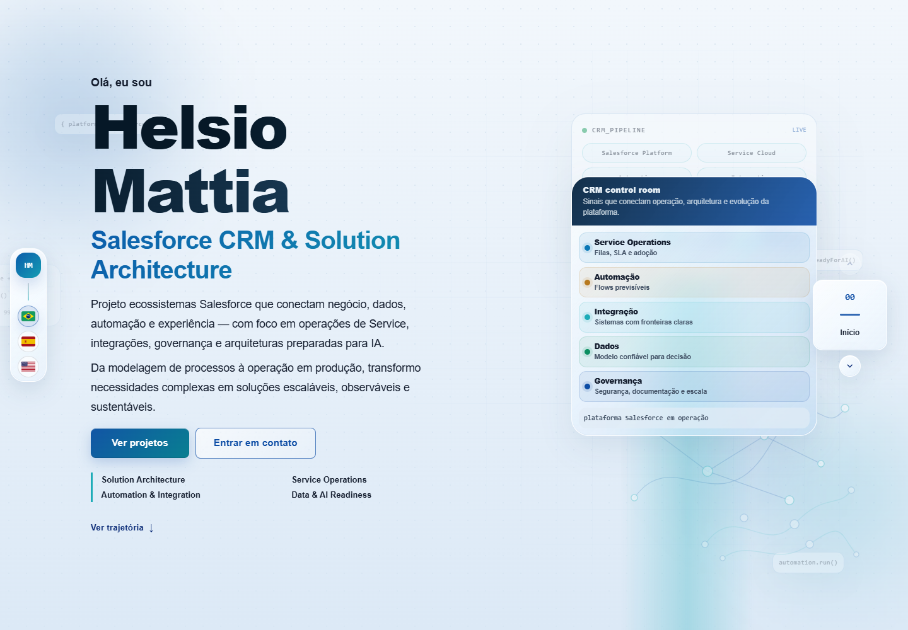

Revisão visual · 20 novembro 2026
A mesma experiência.
Uma nova superfície.
Vidro claro, reflexos suaves e profundidade em azul e ciano. Compare a atualização com a versão anterior, mantendo textos, estrutura e dimensões.


O que foi verificado
Capturas em 1440, 768 e 390 pixels, com a mesma altura de 1000 pixels. Comparação do texto principal, seções e medidas de painéis, cards, títulos e botões. Também foram verificados rotas, histórico, 16 demonstrações, diálogo por teclado, troca de idiomas e preferências de contraste e transparência.
As imagens usam recursos locais e movimento reduzido para manter a comparação consistente. São capturas estáticas em Edge/Chromium. A validação de contraste cobre cinco amostras de cores; não representa certificação completa de acessibilidade ou testes em Safari/Firefox.